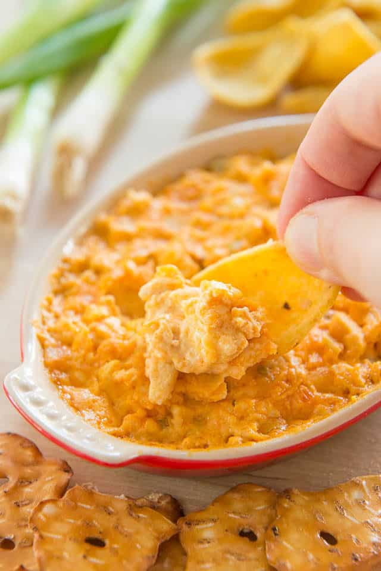
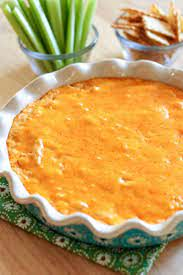
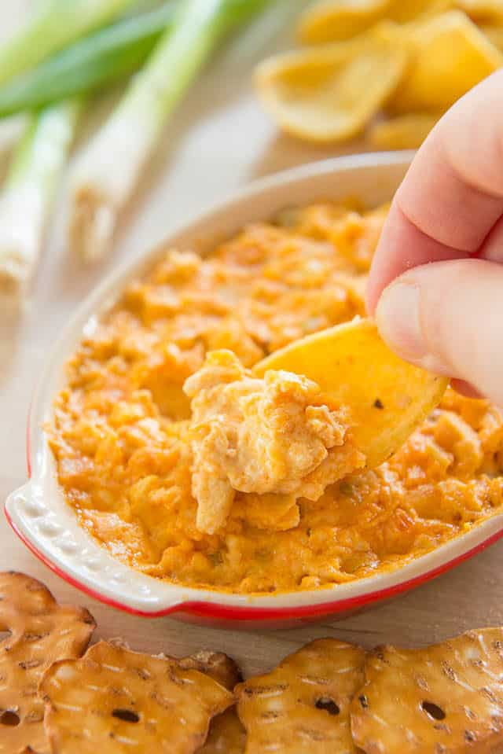
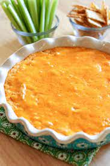

Buffalo Chicken Dip Recipe
Buffalo Chicken Dip is a simple, easy to make recipe that is very popular for parties, or just
good for a nice snack. It is cheesy, creamy, and a little spicey. However, how spicey it is, is up
to you. Add more Hot Sauce for an extra kick. I really like this dish, because it is very tasty and easy
to make if you need a quick meal.
Ingredients:
- 10 Ounces of Cooked Shredded Chicken
- 1 Brick of Cream Cheese
- 1/2 cup of Ranch Dressing
- 3/4 to 1 cup of Hot Sauce (depends on how much you like spicy food)
- 2 cups of Cheese (I prefer cheddar)
Tools:
- A small crockpot, or pot
- A measuring cup
- A skillet or pan
- Spoons
Steps:
- Cook your chicken. Boiling works best to make sure the chicken does not get too cripsy. 🍳
- Shred the cooked chicken. 🐔
-
Add the cream cheese, hot sauce, and ranch dressing into the crock pot,
and warm until creamy and smooth. (Keep stirring for best results)
🥄
- Add in the cheese and keep warm until the cheese is melted into the mixture. 🧀
- Finally add the chicken, and keep warm until the dip is hot enough. 🐔
Final Results:
 



Other Buffalo Chicken Dip Recipes